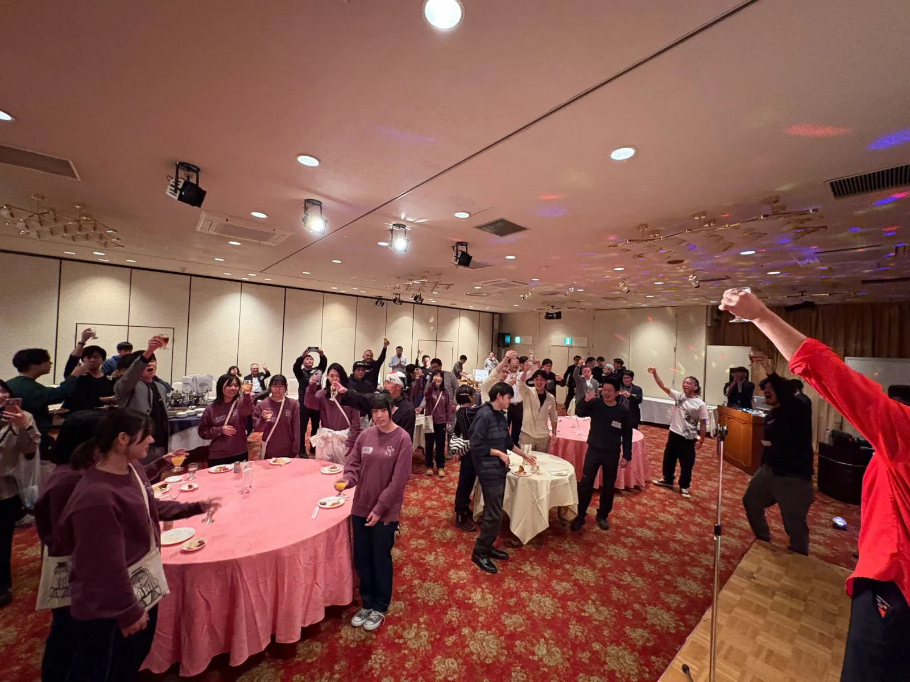
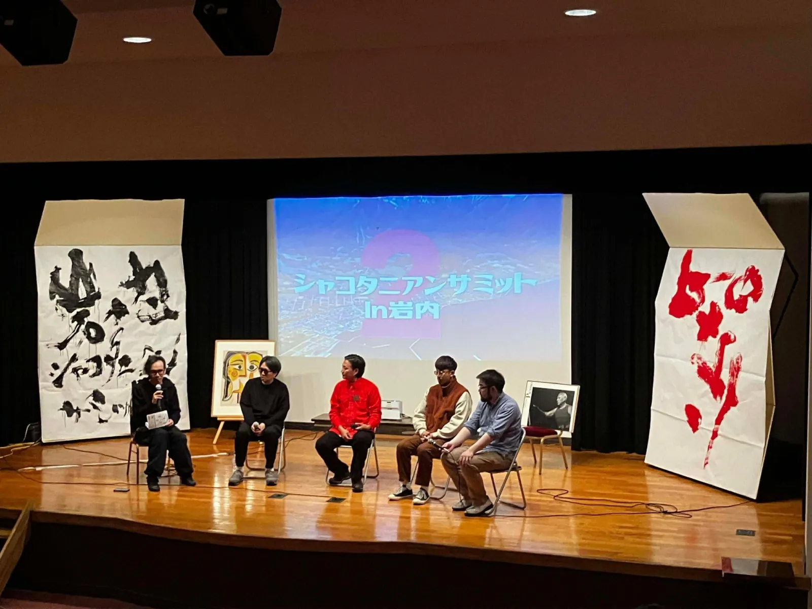
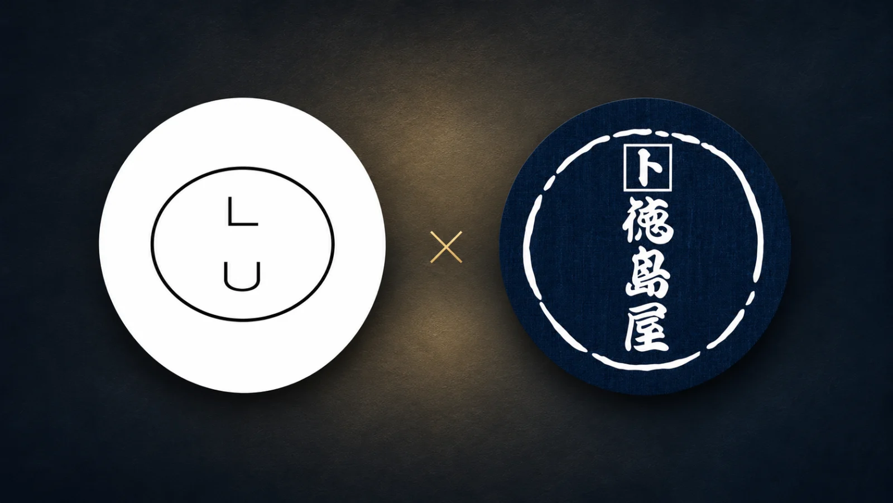
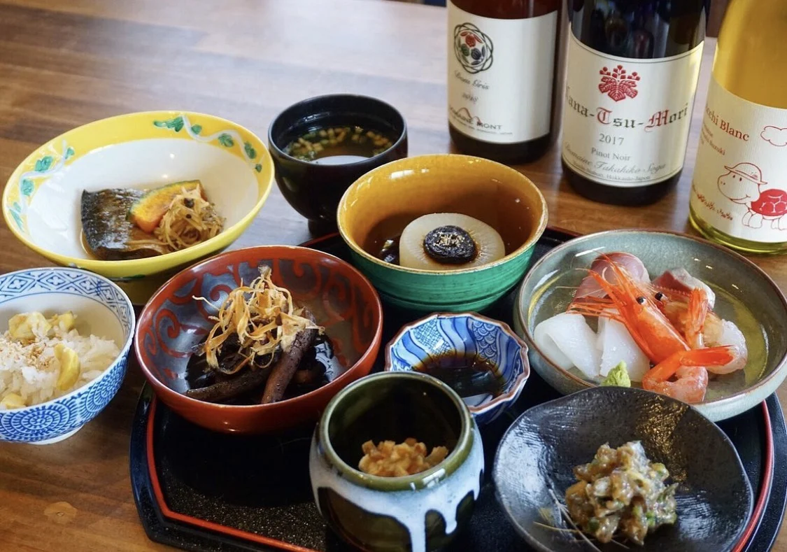
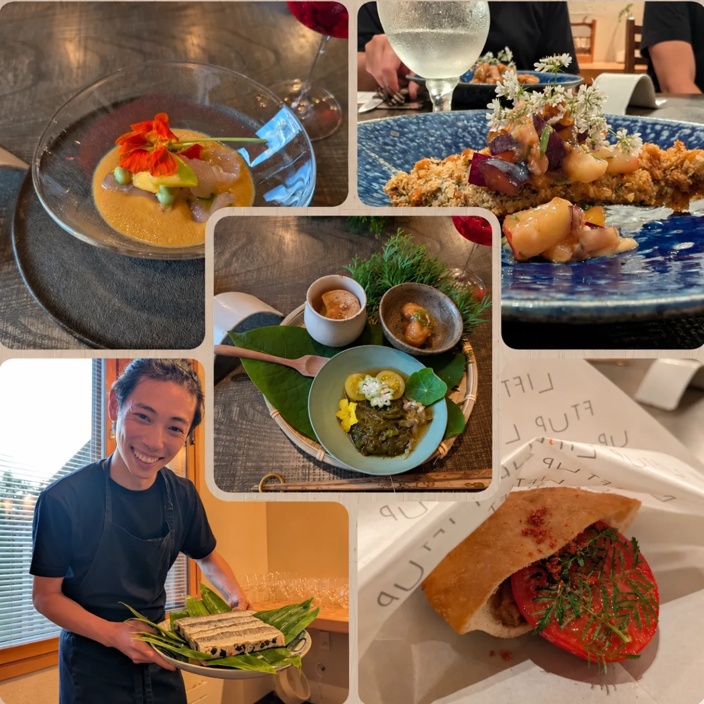
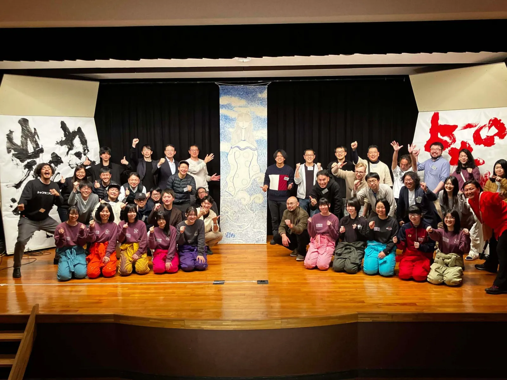

<title>シャコタニアンサミット 3 in 余市</title>
<meta name="claude:viewport-fit-sides" content="cover">
<meta name="description" content="2026年11月21日（土）・22日（日）、余市駅前の徳島屋で開く、積丹半島に暮らす人・働く人・関わる人の 2 日間。参加費 11,000 円前後。申込はフォームから。">
<meta property="og:title" content="シャコタニアンサミット 3 in 余市｜やべえ半島を、つくる。">
<meta property="og:description" content="2026年11月21日（土）・22日（日）、余市・徳島屋。積丹半島の人が自治体の境界を越えて集まる 2 日間。">
<meta property="og:type" content="website">
<meta property="og:image" content="https://shakotanian-summit-3.vercel.app/assets/img/iwanai-party.webp">
<link rel="icon" href="data:image/svg+xml,%3Csvg xmlns='http://www.w3.org/2000/svg' viewBox='0 0 64 64'%3E%3Crect width='64' height='64' rx='12' fill='%230E6FA6'/%3E%3Cpath d='M32 14a18 18 0 0 0 0 36z' fill='%23fff'/%3E%3Cpath d='M32 14a18 18 0 0 1 0 36' fill='none' stroke='%23fff' stroke-width='3'/%3E%3C/svg%3E">
<link rel="preconnect" href="https://fonts.googleapis.com">
<link rel="preconnect" href="https://fonts.gstatic.com" crossorigin>
<link href="https://fonts.googleapis.com/css2?family=Shippori+Mincho+B1:wght@700&family=Zen+Kaku+Gothic+New:wght@400;700&family=Zalando+Sans:wdth,wght@75,700&display=swap" rel="stylesheet">
<style>
/* シャコタニアンサミット 3 in 余市 — 共通の見た目（LP と登壇者ページで同じ）。決まりは index.html 冒頭のコメントと design/02_BRANDS.md */
/* 配色の考え方: 地は白寄りの冷たい灰（クリームにしない・10）。積丹ブルー 1 色を CTA・線・印・大きな塗りに。文字は紺 3 段。
   レイアウト: 左の線 1 本に見出し・リード・本文・ボタンを乗せる（07）。半島マーク（左が塗り・右が線）が地の模様・印・バッジの元（23） */
:root{
  --c-bg:#F7F9FA; --c-surface:#EBF1F4; --c-accent:#0E6FA6; --c-soft:#D6E6EF; --c-line:#CBD7DF;
  --c-text:#14263B; --c-text-body:#2E3E4F; --c-text-sub:#56677A; --c-on-accent:#FFFFFF;
  --c-on-accent-sub:#E6F0F6; --c-line-on-accent:rgba(255,255,255,.42);
  --c-footer-bg:#14263B; --c-footer-fg:#F1F4F6; --c-footer-sub:#A7B4BF; --c-footer-line:rgba(255,255,255,.18); --c-footer-accent:#5FB8E8; /* 紺の上の青は明るい方（#0E6FA6 だと 2.8:1） */
  --c-flap-bg:#14263B; --c-flap-fg:#F7F9FA;
  --f-body:"Zen Kaku Gothic New","Hiragino Kaku Gothic ProN","Hiragino Sans",sans-serif;
  --f-heading:"Shippori Mincho B1","Hiragino Mincho ProN","Yu Mincho",serif;
  --f-en:"Zalando Sans","Helvetica Neue",Arial,sans-serif;
  --t-caption:.8rem; --t-small:.875rem; --t-body:1rem; --t-lead:1.25rem; --t-h3:1.25rem; --t-h2:2rem; --t-h1:2.25rem; --t-display:2.5rem; --t-one:1.5rem;
  --lh-body:1.8; --lh-lead:1.6; --lh-heading:1.3; --lh-display:1.12; --ls-heading:0;
  --s-1:4px; --s-2:8px; --s-3:12px; --s-4:16px; --s-5:20px; --s-6:24px; --s-8:32px; --s-10:40px; --s-16:64px; --s-20:80px; --s-28:112px;
  --section-gap:var(--s-20); --gutter:16px; --page-max:1120px;
  --r-sm:4px; --r-md:4px; --r-pill:999px; --border-1:1px solid var(--c-line);
  --dur:.22s; --ease:cubic-bezier(.2,.6,.2,1);
  color-scheme:light;
}
@media (prefers-color-scheme:dark){
  :root:not([data-theme="light"]){
    --c-bg:#0F1B28; --c-surface:#172637; --c-accent:#5FB8E8; --c-soft:#1F3A52; --c-line:#2C4258;
    --c-text:#F1F4F6; --c-text-body:#D4DCE3; --c-text-sub:#A7B4BF; --c-on-accent:#0F1B28;
    --c-on-accent-sub:#1F3A52; --c-line-on-accent:rgba(15,27,40,.35);
    --c-footer-bg:#0A1320; --c-footer-fg:#F1F4F6; --c-footer-sub:#A7B4BF; --c-footer-line:rgba(255,255,255,.14); --c-footer-accent:#5FB8E8;
    --c-flap-bg:#F1F4F6; --c-flap-fg:#0F1B28;
    color-scheme:dark;
  }
}
:root[data-theme="dark"]{
  --c-bg:#0F1B28; --c-surface:#172637; --c-accent:#5FB8E8; --c-soft:#1F3A52; --c-line:#2C4258;
  --c-text:#F1F4F6; --c-text-body:#D4DCE3; --c-text-sub:#A7B4BF; --c-on-accent:#0F1B28;
  --c-on-accent-sub:#1F3A52; --c-line-on-accent:rgba(15,27,40,.35);
  --c-footer-bg:#0A1320; --c-footer-fg:#F1F4F6; --c-footer-sub:#A7B4BF; --c-footer-line:rgba(255,255,255,.14); --c-footer-accent:#5FB8E8;
  --c-flap-bg:#F1F4F6; --c-flap-fg:#0F1B28;
  color-scheme:dark;
}
@media (min-width:768px){ :root{ --t-h1:3rem; --t-display:4rem; --t-h2:3rem; --t-lead:1.5rem; --t-one:2.25rem; --section-gap:var(--s-28); --gutter:32px; } }

*{box-sizing:border-box}
html{-webkit-text-size-adjust:100%;scroll-behavior:smooth}
html.js-motion{scroll-behavior:auto}
body{margin:0;background:var(--c-bg);color:var(--c-text-body);font-family:var(--f-body);font-size:var(--t-body);line-height:var(--lh-body);overflow-x:clip}
::selection{background:var(--c-accent);color:var(--c-on-accent)}
input,textarea{caret-color:var(--c-accent)}
a{color:inherit;text-underline-offset:.2em}
a:focus-visible,button:focus-visible,summary:focus-visible{outline:3px solid var(--c-accent);outline-offset:3px}
img{max-width:100%;display:block;height:auto}
h1,h2,h3{font-family:var(--f-heading);font-weight:700;color:var(--c-text);line-height:var(--lh-heading);letter-spacing:var(--ls-heading);margin:0 0 var(--s-3);font-feature-settings:"palt";text-wrap:balance}
h1{font-size:var(--t-h1)} h2{font-size:var(--t-h2);line-height:1.2;letter-spacing:-.01em} h3{font-size:var(--t-h3)}
p{margin:0 0 var(--s-4);max-width:36em;text-wrap:pretty}
p:last-child{margin-bottom:0}
strong,b{color:var(--c-text);font-weight:700}
.wrap{max-width:var(--page-max);margin:0 auto;padding-left:max(var(--gutter),env(safe-area-inset-left,0px));padding-right:max(var(--gutter),env(safe-area-inset-right,0px))}
.section{padding-block:var(--section-gap);position:relative;overflow:clip} /* 登場前に 1.3 倍の英字・番号が横にはみ出さないように */
.section-alt{background:var(--c-surface)}
.sub{color:var(--c-text-sub);font-size:var(--t-small)}
.en{font-family:var(--f-en);font-stretch:75%;font-weight:700;letter-spacing:.04em}
.lead{font-size:var(--t-lead);line-height:var(--lh-lead);max-width:22em;color:var(--c-text-body)}
.nb{display:inline-block}
.h{color:var(--c-accent)} /* 「半」の 1 文字だけ青（23-4）。ページ中で同じ字に統一 */

/* 青い面（積丹ブルーの塗り＝半島マークの左半分）。中の文字色は on-accent に差し替える */
.section-accent{background:var(--c-accent);--c-text:var(--c-on-accent);--c-text-body:var(--c-on-accent);--c-text-sub:var(--c-on-accent-sub);--c-line:var(--c-line-on-accent);--c-bg:var(--c-accent)}
.section-accent .mark,.section-accent .en,.section-accent .one .hi,.section-accent .h{color:var(--c-on-accent)} /* 青い面の上では青い字が消えるので白に */
.section-accent ::selection{background:var(--c-on-accent);color:var(--c-accent)}

/* 2 段ラベル: 番号 + 英字の補足。印は半島マーク（左半分が塗り・右半分が線） */
.eyebrow{display:flex;align-items:center;gap:var(--s-2);font-family:var(--f-en);font-stretch:75%;font-weight:700;font-size:var(--t-small);letter-spacing:.14em;color:var(--c-text-sub);margin-bottom:var(--s-3);text-transform:uppercase}
.eyebrow .no{color:var(--c-accent);font-size:1rem;letter-spacing:.02em}
.section-accent .eyebrow .no{color:var(--c-on-accent)}
.mark{width:14px;height:14px;flex:none;color:var(--c-accent)}

/* 英字の一言（23-6）: 飾りの見出しではなく中身のある短い文。最後の語だけ青。字間は .05em 以下（文として読む英字） */
.one{font-family:var(--f-en);font-stretch:75%;font-weight:700;font-size:var(--t-one);line-height:1.15;letter-spacing:.01em;color:var(--c-text-sub);margin:0 0 var(--s-6);max-width:none;text-wrap:balance}
.one .hi{color:var(--c-accent)}
.sec-head{margin-bottom:var(--s-8)}
.sec-head h2{margin-bottom:var(--s-3)}
.ln{display:inline-block;overflow:hidden;vertical-align:bottom;padding-bottom:.08em;margin-bottom:-.08em} /* 見出しの行を下から出すための枡（JS が付ける） */

/* ボタン: 主 1 つ・塗りは積丹ブルー。押し込みの手応えと、印の反転（半分が島になる） */
.btn{display:inline-flex;align-items:center;justify-content:center;gap:var(--s-2);min-height:52px;padding:0 var(--s-8);border-radius:var(--r-pill);font:700 var(--t-body)/1 var(--f-body);text-decoration:none;cursor:pointer;transition:transform var(--dur) var(--ease),background var(--dur) var(--ease)}
html.js-motion .btn{transition:background var(--dur) var(--ease)}
.btn .mark{transition:transform .35s var(--ease)}
.btn-primary{background:var(--c-accent);color:var(--c-on-accent);border:1px solid var(--c-accent)}
.btn-primary .mark{color:var(--c-on-accent)}
.btn-ghost{background:transparent;color:var(--c-accent);border:1px solid var(--c-accent)}
.btn:active{transform:translateY(1px)}
@media (hover:hover) and (pointer:fine){ .btn:hover .mark{transform:rotate(180deg)} .btn-ghost:hover{background:var(--c-soft)} }
.btn-row{display:flex;flex-wrap:wrap;gap:var(--s-3);align-items:center}
.btn-note{margin-top:var(--s-3);font-size:var(--t-caption);color:var(--c-text-sub);max-width:36em}

/* ヘッダー: ワードマーク + 主ボタン 1 つ */
.header{position:sticky;top:env(safe-area-inset-top,0px);z-index:10;background:var(--c-bg);border-bottom:var(--border-1)}
.header.dark{background:rgba(15,27,40,.9);-webkit-backdrop-filter:blur(10px);backdrop-filter:blur(10px);border-bottom-color:rgba(255,255,255,.12)}
body::before{content:"";position:fixed;inset:0 0 auto;height:env(safe-area-inset-top,0px);z-index:11;background:#0F1B28}
.header .wrap{display:flex;align-items:center;justify-content:space-between;min-height:56px;gap:var(--s-3)}
.wordmark{display:flex;align-items:center;gap:var(--s-2);text-decoration:none;color:var(--c-text);font-family:var(--f-en);font-stretch:75%;font-weight:700;font-size:1rem;letter-spacing:.04em;white-space:nowrap}
.wordmark .mark{width:18px;height:18px}
.header .btn{min-height:44px;padding:0 var(--s-5);font-size:var(--t-small)}
/* ヘッダーのタグ（2026-11-13 鈴木さん「前回の様子」「登壇者紹介」）: 文字だけ・押す場所 44px・いまのページは青 */
.nav{display:flex;align-items:center;gap:var(--s-2);margin-left:auto;margin-right:var(--s-2)}
.nav a{display:inline-flex;align-items:center;min-height:44px;padding:0 var(--s-2);font-size:var(--t-small);font-weight:700;color:var(--c-text);text-decoration:none;white-space:nowrap;border-bottom:2px solid transparent}
.nav a[aria-current]{color:var(--c-accent);border-bottom-color:var(--c-accent)}
@media (hover:hover) and (pointer:fine){ .nav a:hover{color:var(--c-accent)} }
@media (max-width:559px){ .wordmark{font-size:0} .header .btn{padding:0 var(--s-4)} .nav{margin-right:0;gap:0} .nav a{padding:0 var(--s-2)} }

/* 暗い面（表紙・前回・申込・ヘッダー）: 暗い配色のトークンをその要素だけに当てる（28_TYPO_PHOTO_LP.md「3 か所だけ暗い面に」） */
.dark{--c-bg:#0F1B28; --c-surface:#172637; --c-accent:#5FB8E8; --c-soft:#1F3A52; --c-line:#2C4258;
  --c-text:#F1F4F6; --c-text-body:#D4DCE3; --c-text-sub:#B6C2CC; --c-on-accent:#0F1B28; --c-on-accent-sub:#1F3A52;
  --c-flap-bg:#F1F4F6; --c-flap-fg:#0F1B28; background:var(--c-bg); color:var(--c-text-body); color-scheme:dark}
.dark ::selection{background:var(--c-accent);color:var(--c-on-accent)}

/* ヒーロー: 写真いっぱい（第 2 回の大宴会）の上に、大きな題をひとつ（28）。下 1/3 を .97 まで暗くして文字を乗せる。
   半島マークはバッジ・ボタン・印・申込の地に残し、表紙の大きな塗りは写真に譲った */
.hero{position:relative;min-height:100svh;display:grid;align-items:end;overflow:clip;isolation:isolate;padding-block:calc(var(--s-20) + 56px) var(--s-16)}
.hero-bg{position:absolute;inset:0;z-index:-1}
.hero-bg img{width:100%;height:100%;object-fit:cover;object-position:50% 45%;transform-origin:50% 50%}
.hero-bg::after{content:"";position:absolute;inset:0;background:linear-gradient(180deg,rgba(15,27,40,.6) 0%,rgba(15,27,40,.5) 16%,rgba(15,27,40,.93) 46%,rgba(15,27,40,.975) 70%,rgba(15,27,40,.99) 100%)} /* 文字の乗る下半分は .9〜.985 まで暗く（impeccable の実測で 4.5:1 を切らないため・28 の 4） */
.hero .wrap{width:100%}
.hero-in{position:relative;z-index:1;max-width:56rem}
.hero .one{margin-bottom:var(--s-3);color:#fff}
.photo-scene .one{color:#fff}
.hero .date{font-family:var(--f-en);font-stretch:75%;font-weight:700;font-size:clamp(1.25rem,3vw,1.75rem);letter-spacing:.02em;color:#fff;margin:0 0 var(--s-4);font-variant-numeric:tabular-nums}
.hero .date .sub{color:var(--c-text-sub);font-size:.6em;letter-spacing:.12em;margin-left:.2em}
.hero .date .sep{color:var(--c-accent);margin:0 .3em}
.hero h1{font-size:clamp(3rem,11vw,7rem);line-height:1.04;letter-spacing:-.015em;color:#fff;margin-bottom:var(--s-6);word-break:auto-phrase;text-wrap:balance}
.hero h1 .ch{display:inline-block}
.hero .lead{margin-bottom:var(--s-8);color:#E8EEF2;max-width:26em;font-size:clamp(1.125rem,2.6vw,1.5rem)}
.hero .btn-ghost{color:#fff;border-color:rgba(255,255,255,.6)}
.hero .btn-note,.photo-scene .btn-note,.photo-scene .flap-note{color:#C9D4DD}
.photo-scene .lead{color:#E8EEF2}
.photo-scene .eyebrow,.hero .date .sub{color:#C9D4DD}
.credit{position:absolute;right:var(--gutter);bottom:var(--s-3);margin:0;font-size:var(--t-caption);color:rgba(255,255,255,.62);z-index:1;max-width:60vw;text-align:right;line-height:1.4}
.badge-spin{position:absolute;right:var(--gutter);top:calc(72px + env(safe-area-inset-top,0px));width:112px;height:112px;pointer-events:none;z-index:1}
.badge{display:block;width:100%;height:100%;color:#fff}
.badge text{font-family:var(--f-en);font-stretch:75%;font-weight:700;font-size:12px;letter-spacing:.5px;fill:currentColor} /* 112px で 13.4px 以上（最小の文字 0.8rem） */
.badge .mark{color:var(--c-accent)}
@media (min-width:768px){
  .hero{padding-block:calc(var(--s-16) + 56px) var(--s-10)}
  .hero-in{max-width:min(56rem,calc(100% - 200px))}
  .badge-spin{top:auto;bottom:var(--s-16);width:150px;height:150px}
  .credit{bottom:var(--s-6)}
}

/* 場面（前回・申込）: 写真いっぱい + 大きな言葉ひとつ（iwanai.html の .scene と同じ型） */
.photo-scene{min-height:88svh;display:grid;align-items:end;isolation:isolate;padding-block:var(--s-28) var(--s-20)}
.photo-scene .wrap{width:100%;position:relative;z-index:1}
.scene-bg{position:absolute;inset:-12% 0;z-index:-1}
.scene-bg img{width:100%;height:100%;object-fit:cover}
.scene-bg::after{content:"";position:absolute;inset:0;background:linear-gradient(180deg,rgba(15,27,40,.6) 0%,rgba(15,27,40,.5) 16%,rgba(15,27,40,.93) 46%,rgba(15,27,40,.975) 70%,rgba(15,27,40,.99) 100%)}
.photo-scene h2{font-size:clamp(2.75rem,10vw,6.5rem);line-height:1.04;letter-spacing:-.015em;color:#fff;margin-bottom:var(--s-4)}
.photo-scene h2 .ch{display:inline-block}
.photo-scene .sec-head{margin-bottom:var(--s-6)}
.photo-scene .lead{max-width:26em;margin-bottom:var(--s-8);font-size:clamp(1.125rem,2.6vw,1.5rem)}
.photo-scene .btn-ghost{color:#fff;border-color:rgba(255,255,255,.6)}
@media (min-width:768px){ .photo-scene{min-height:92svh} }

/* 流れる帯: 半島の町の名前（資料の 1 節から）。本文に重ねない・動きを減らす設定で止まる。JS が動くときはスクロールの速さで加速（React Bits「Scroll Velocity」の考え方） */
.marquee{border-top:var(--border-1);border-bottom:var(--border-1);overflow:hidden;padding-block:var(--s-4);background:var(--c-bg)}
.marquee-track{display:flex;width:max-content;gap:var(--s-10);white-space:nowrap;font-family:var(--f-heading);font-weight:700;font-size:1.5rem;color:var(--c-text);font-feature-settings:"palt";will-change:transform}
.marquee-track span{display:inline-flex;align-items:center;gap:var(--s-10)}
.marquee-track .mark{width:14px;height:14px}
@media (min-width:768px){ .marquee-track{font-size:2rem;gap:var(--s-16)} .marquee-track span{gap:var(--s-16)} .marquee-track .mark{width:18px;height:18px} }
@media (prefers-reduced-motion:no-preference){
  .marquee-track{animation:marquee 48s linear infinite}
  html.js-motion .marquee-track{animation:none}
  @keyframes marquee{from{transform:translateX(0)}to{transform:translateX(-50%)}}
}

/* 寄せて: 第一回の文。明朝で、1 行ずつ。中央揃えにしない */
.poem{max-width:30em}
.poem p{font-family:var(--f-heading);font-size:clamp(1.125rem,2.2vw,1.3125rem);line-height:2;color:var(--c-text);margin-bottom:var(--s-6);font-feature-settings:"palt"}
.poem .big{font-size:clamp(2rem,6.5vw,3.75rem);line-height:1.3;letter-spacing:-.01em}
.poem .from{font-family:var(--f-body);font-size:var(--t-small);color:var(--c-text-sub)}
@media (max-width:767px){ .poem p:not(.big) br{display:none} }

/* 番号付きの段: 資料の 1｜2｜3。細線で区切る（カードにしない・10）。番号は大きく */
.numbered{display:grid;gap:0;border-top:var(--border-1)}
.numbered > div{padding-block:var(--s-8);border-bottom:var(--border-1);display:grid;grid-template-columns:3.6rem 1fr;gap:var(--s-3) var(--s-4);align-items:start}
.numbered .no{font-family:var(--f-en);font-stretch:75%;font-weight:700;font-size:3.25rem;line-height:1;color:var(--c-accent);padding-top:.05em}
.numbered h3{margin-bottom:var(--s-2);font-size:clamp(1.375rem,3vw,1.875rem)}
.numbered p{grid-column:2}
@media (min-width:768px){ .numbered > div{grid-template-columns:7rem 1fr;padding-block:var(--s-10)} .numbered .no{font-size:5rem} }

/* 開催概要: 定義リスト。1 列、PC は 2 列 */
.spec{display:grid;grid-template-columns:1fr;gap:0;border-top:var(--border-1);margin:0}
.spec > div{display:grid;grid-template-columns:4.5em 1fr;gap:var(--s-3);padding-block:var(--s-4);border-bottom:var(--border-1)}
@media (min-width:768px){ .spec > div{grid-template-columns:6.5em 1fr} }
.spec dt{font-weight:700;color:var(--c-text);font-size:var(--t-small);padding-top:.2em}
.spec dd{margin:0;min-width:0}
.spec dd .sub{display:block}
.spec .price{font-family:var(--f-en);font-stretch:75%;font-weight:700;font-size:2.25rem;color:var(--c-text);font-variant-numeric:tabular-nums;line-height:1.2}
.spec .price small{font-family:var(--f-body);font-size:var(--t-body);font-weight:400;margin-left:.2em}
@media (min-width:768px){ .spec{grid-template-columns:1fr 1fr;column-gap:var(--s-10)} .spec .price{font-size:3rem} }

/* 日程の表: 1 列で縦に。時間は英字の数字。DAY の英字は大きく */
.day{margin-top:var(--s-16)}
.day-head{display:flex;align-items:baseline;gap:var(--s-4);flex-wrap:wrap;margin-bottom:var(--s-5)}
.day-head .en{font-size:3.5rem;color:var(--c-accent);line-height:1;letter-spacing:-.01em}
.day-head h3,.day-head h2{margin:0;font-size:clamp(1.25rem,2.4vw,1.625rem)}
.day-head .sub{width:100%}
@media (min-width:768px){ .day{margin-top:var(--s-20)} .day-head .en{font-size:5.5rem} }
.sched{width:100%;border-collapse:collapse;border-top:var(--border-1)}
.sched tr{display:grid;grid-template-columns:7.5em 1fr;gap:var(--s-1) var(--s-3);padding-block:var(--s-3);border-bottom:var(--border-1)}
.sched td{padding:0;vertical-align:top;min-width:0}
.sched .time{font-family:var(--f-en);font-stretch:75%;font-weight:700;font-size:1.05rem;letter-spacing:.02em;color:var(--c-text);font-variant-numeric:tabular-nums;line-height:1.6;padding-top:.1em}
.sched .what{font-weight:700;color:var(--c-text)}
.sched .what .en{font-size:var(--t-small);color:var(--c-accent);margin-left:.4em;letter-spacing:.04em}
.sched .desc{grid-column:2;color:var(--c-text-body);font-size:var(--t-small);line-height:1.7}
@media (min-width:768px){ .sched tr{grid-template-columns:8.5em 14em 1fr;gap:var(--s-3)} .sched .desc{grid-column:3;font-size:var(--t-body)} }

/* セッション: 3 幕。番号は英字、問いは明朝 */
.sessions{display:grid;gap:0;border-top:var(--border-1)}
.sessions > div{padding-block:var(--s-8);border-bottom:var(--border-1)}
.sessions .tag{display:flex;align-items:center;gap:var(--s-2);font-family:var(--f-en);font-stretch:75%;font-weight:700;letter-spacing:.14em;color:var(--c-accent);font-size:var(--t-small);margin-bottom:var(--s-2)}
.sessions h3{font-size:clamp(1.75rem,4vw,2.5rem);line-height:1.2;margin-bottom:var(--s-2)}
.sessions .theme{color:var(--c-text-sub);font-size:var(--t-small);margin-bottom:var(--s-3)}
.sessions .q{font-family:var(--f-heading);font-weight:700;color:var(--c-text);font-size:clamp(1.125rem,2.2vw,1.375rem);line-height:1.7;max-width:30em;margin-bottom:var(--s-3);font-feature-settings:"palt"}
.sessions .guests{font-size:var(--t-small);color:var(--c-text-body);max-width:40em}
.sessions .guests b{color:var(--c-text)}
@media (min-width:900px){ .sessions > div{display:grid;grid-template-columns:1fr 1.4fr;gap:var(--s-10)} .sessions .q{grid-column:2;grid-row:1/span 3;margin:0} .sessions .guests{grid-column:1} }

/* 酒トーク: 写真は大きく。幕のように開き、スクロールで枠いっぱいに広がる（motion.js） */
.dinner{display:grid;gap:var(--s-8);align-items:start}
.dinner .photo{overflow:hidden;border-radius:var(--r-md);background:var(--c-surface)}
.dinner .photo img{width:100%;aspect-ratio:16/9;object-fit:cover}
.dinner .photo.square img{aspect-ratio:1}
.dinner .photo.wide img{aspect-ratio:1670/941}
.places{display:grid;gap:var(--s-6);margin-top:var(--s-6)}
.place h3{font-size:1.125rem;margin-bottom:var(--s-1)}
.place p{font-size:var(--t-small);color:var(--c-text-body)}
.place .photo{margin-bottom:var(--s-3)}
@media (min-width:768px){ .places{grid-template-columns:1fr 1fr;gap:var(--s-8)} }

/* フィールドワーク: 青い面に 4 コース。英字 1 文字 + 日本語 */
.fields{display:grid;grid-template-columns:1fr 1fr;gap:0;border-top:var(--border-1);border-left:var(--border-1)}
.fields > div{padding:var(--s-6) var(--s-4);border-right:var(--border-1);border-bottom:var(--border-1);min-width:0}
.fields .en{font-size:4rem;color:var(--c-text);line-height:1;display:block;margin-bottom:var(--s-3)}
.fields h3{font-size:clamp(1.25rem,2.4vw,1.625rem);margin-bottom:var(--s-1);color:var(--c-text)}
.fields p{font-size:var(--t-small);color:var(--c-text-sub)}
@media (min-width:768px){ .fields{grid-template-columns:repeat(4,1fr)} .fields > div{padding:var(--s-8) var(--s-6)} .fields .en{font-size:5.5rem} }

/* 目指すもの: 半島マークを行頭に */
.aims{list-style:none;margin:0;padding:0;max-width:36em}
.aims{max-width:none}
.aims li{display:grid;grid-template-columns:14px 1fr;gap:var(--s-4);align-items:start;padding-block:var(--s-4);border-bottom:var(--border-1)}
.aims li span{font-family:var(--f-heading);font-weight:700;font-size:clamp(1.25rem,3.2vw,2rem);line-height:1.45;color:var(--c-text);font-feature-settings:"palt"}
.aims .mark{margin-top:.6em}
.aims li:first-child{border-top:var(--border-1)}

/* 申込: 日付のパタパタ板（React Bits「Split Flap Text」の考え方を素の HTML で）、主ボタン 1 つ、次に起きることを 1 文 */
.apply{overflow:clip}
.apply .wrap{display:grid;gap:var(--s-6);position:relative;z-index:1}
.apply .wrap{gap:var(--s-8)}
.apply-bg{position:absolute;right:-34vw;bottom:-30vw;width:80vw;max-width:720px;aspect-ratio:1;color:var(--c-accent);opacity:.16;pointer-events:none;z-index:0}
.flap{display:inline-flex;gap:4px;margin:0 0 var(--s-3);font-family:var(--f-en);font-stretch:75%;font-weight:700;font-size:clamp(3rem,9vw,5rem);line-height:1;font-variant-numeric:tabular-nums}
.flap .cell{position:relative;display:inline-flex;align-items:center;justify-content:center;width:.92em;height:1.3em;background:var(--c-flap-bg);color:var(--c-flap-fg);border-radius:3px;overflow:hidden}
.flap .cell::after{content:"";position:absolute;left:0;right:0;top:50%;height:1px;background:rgba(255,255,255,.22)}
.dark .flap .cell::after{background:rgba(15,27,40,.18)}
.flap .cell.sym{width:.6em;background:transparent;color:var(--c-accent)}
.flap .cell.sym::after{display:none}
.flap-note{font-size:var(--t-body);color:var(--c-text-sub);margin-bottom:var(--s-4)}
@media (min-width:768px){ .apply-bg{right:-14vw;bottom:-28vw;width:52vw} }
.orgs{font-size:var(--t-small);color:var(--c-text-sub);max-width:40em}
.orgs b{color:var(--c-text-body);font-weight:700}
.apply .orgs{color:var(--c-text-sub)}
.apply .orgs b{color:var(--c-text)}

/* フッター: 紺の面。合言葉を大きく */
.footer{padding-block:var(--s-16) var(--s-10);background:var(--c-footer-bg);color:var(--c-footer-sub);font-size:var(--t-small)}
.footer .wrap{display:grid;gap:var(--s-6)}
.footer .wordmark{font-size:1.125rem;color:var(--c-footer-fg)}
.footer .wordmark .mark{color:var(--c-footer-accent)}
.footer .tag{font-family:var(--f-heading);font-weight:700;color:var(--c-footer-fg);font-size:clamp(2.25rem,7vw,4.5rem);line-height:1.15;letter-spacing:-.01em;font-feature-settings:"palt";margin:var(--s-3) 0 0;max-width:none}
.footer .tag .h{color:var(--c-footer-accent)}
.footer .one{color:var(--c-footer-sub);margin:var(--s-4) 0 0}
.footer .one .hi{color:var(--c-footer-accent)}
.footer .meta{border-top:1px solid var(--c-footer-line);padding-top:var(--s-4);display:flex;flex-wrap:wrap;gap:var(--s-2) var(--s-6)}
.footer a{color:var(--c-footer-sub)}
@media (min-width:768px){ .footer{padding-block:var(--s-20) var(--s-10)} }

/* 動きの初期状態は CSS で変えない（JS が止まっても全部見える・21） */
.pc-only{display:none}
@media (min-width:768px){ .pc-only{display:inline} }

/* ===== 登壇者ページ（speakers/）===== 一覧は行、紹介は 1 列。カードにしない（10）。写真が届くまで写真の枠は出さない（19） */
/* 登壇者ページの見た目は assets/speakers.css（2026-11-13 に 28 の型で作り直し） */

/* 前回の様子（第 2 回 in 岩内）: 報告書の写真 6 枚 + 2 日の流れ + 残ったもの。写真は .curtain で左から開く（motion.js） */
.recap-lead{max-width:36em;margin-bottom:var(--s-8)}
.recap-grid{display:grid;grid-template-columns:1fr 1fr;gap:var(--s-3);margin-bottom:var(--s-10)}
.recap-grid figure{margin:0;min-width:0}
.recap-grid figure:first-child{grid-column:1/-1}
.recap-grid .photo{overflow:hidden;border-radius:var(--r-md);background:var(--c-surface)}
.recap-grid .photo img{width:100%;height:100%;aspect-ratio:4/3;object-fit:cover;display:block}
.recap-grid figure:first-child .photo img{aspect-ratio:16/9}
.recap-grid figure:last-child{grid-column:1/-1}
.recap-grid figure:last-child .photo img{aspect-ratio:16/9}
.recap-grid figcaption{font-size:var(--t-small);color:var(--c-text-sub);margin-top:var(--s-2);line-height:1.5}
.recap-days{display:grid;gap:var(--s-8);margin-bottom:var(--s-10)}
.recap-day .en{font-size:2rem;color:var(--c-accent);line-height:1;display:block;margin-bottom:var(--s-1)}
.recap-day h3{font-size:1.125rem;margin-bottom:var(--s-3)}
.recap-day ol{list-style:none;margin:0;padding:0;border-top:var(--border-1)}
.recap-day li{display:grid;grid-template-columns:14px 1fr;gap:var(--s-3);align-items:start;padding-block:var(--s-3);border-bottom:var(--border-1);font-size:var(--t-small);color:var(--c-text-body);line-height:1.7}
.recap-day li .mark{margin-top:.5em}
.recap-day li b{color:var(--c-text);font-weight:700}
.recap-left h3{font-size:1.125rem;margin-bottom:var(--s-3)}
.recap-bridge{font-family:var(--f-heading);font-weight:700;font-size:1.25rem;line-height:1.6;color:var(--c-text);max-width:28em;margin-top:var(--s-8);font-feature-settings:"palt"}
.recap-credit{font-size:var(--t-small);color:var(--c-text-sub);margin-top:var(--s-6)}
@media (min-width:768px){
  .recap-grid{grid-template-columns:repeat(3,1fr);gap:var(--s-4)}
  .recap-grid figure:last-child{grid-column:auto}
  .recap-grid figure:last-child .photo img{aspect-ratio:4/3}
  .recap-grid figure:first-child{grid-column:1/3;grid-row:1/3;display:flex;flex-direction:column;min-height:0}
  .recap-grid figure:first-child .photo{flex:1;min-height:0}
  .recap-grid figure:first-child .photo img{aspect-ratio:auto;height:100%}
  .recap-days{grid-template-columns:1fr 1fr;gap:var(--s-10)}
  .recap-day .en{font-size:2.75rem}
  .recap-bottom{display:grid;grid-template-columns:1fr 1fr;gap:var(--s-10);align-items:start}
  .recap-bridge{margin-top:0;font-size:1.5rem}
}
/* 前回の段（LP 側は短く）: 大きな写真 1 枚 → 特設ページへ */
.recap-hero{position:relative;display:block;overflow:hidden;border-radius:var(--r-md);background:var(--c-surface);margin-bottom:var(--s-6)}
.recap-hero img{width:100%;aspect-ratio:16/9;object-fit:cover;display:block;transition:transform .6s var(--ease)}
.recap-hero-tag{position:absolute;left:var(--s-4);bottom:var(--s-4);display:inline-flex;align-items:center;gap:var(--s-2);padding:6px 12px;border-radius:var(--r-pill);background:rgba(20,38,59,.72);color:#fff;font-family:var(--f-en);font-stretch:75%;font-weight:700;letter-spacing:.08em;font-size:var(--t-small)}
.recap-hero-tag .mark{color:#fff}
@media (hover:hover) and (pointer:fine){ .recap-hero:hover img{transform:scale(1.03)} }
@media (min-width:768px){ .recap-hero img{aspect-ratio:21/9} }
</style>

<!-- impeccable-disable kicker-above-heading: 英字の飾りのラベルは 01_PRINCIPLES.md 9（2026-11-07 鈴木さん「英字の飾りも使って良い」）で歓迎。ブランドの英字書体で作っている -->
<!-- impeccable-disable marquee: 流れる帯（半島の町の名前）は 01_PRINCIPLES.md 9 で歓迎。本文に重ねず、動きを減らす設定で止まる -->

<svg width="0" height="0" style="position:absolute" aria-hidden="true">
  <symbol id="hanto" viewBox="0 0 24 24">
    <path d="M12 2a10 10 0 0 0 0 20z" fill="currentColor"/>
    <path d="M12 2a10 10 0 0 1 0 20" fill="none" stroke="currentColor" stroke-width="1.8"/>
  </symbol>
</svg>

<header class="header dark">
  <div class="wrap">
    <a class="wordmark" href="#top" aria-label="シャコタニアンサミット 3 in 余市 ページの先頭へ"><svg class="mark" aria-hidden="true"><use href="#hanto"/></svg>SHAKOTANIAN SUMMIT 3</a>
    <nav class="nav" aria-label="ページ"><a href="https://shakotanian-summit-3.vercel.app/iwanai.html" target="_blank" rel="noopener">前回の様子</a><a href="https://shakotanian-summit-3.vercel.app/speakers/index.html">登壇者紹介</a></nav>
    <a class="btn btn-primary" href="https://forms.gle/kHrXC5uL7YQUNuEFA" target="_blank" rel="noopener" data-cta-type="apply" data-cta-section="header">申し込む</a>
  </div>
</header>

<main id="top">
  <section class="hero dark" aria-labelledby="h-title">
    <div class="hero-bg" aria-hidden="true"></div>
    <div class="wrap">
      <div class="hero-in">
        <p class="one">One hell of a <span class="hi">peninsula.</span></p>
        <p class="date"><span class="nb">2026.11.21 <span class="sub">SAT</span></span><span class="sep">–</span><span class="nb">11.22 <span class="sub">SUN</span></span></p>
        <h1 id="h-title"><span class="nb">やべえ<span class="h">半</span>島を、</span><span class="nb">つくる。</span></h1>
        <p class="lead">積丹半島に暮らす人、働く人、関わる人が、自治体や分野の境界を越えて集まる 2 日間。第 3 回は余市駅前の徳島屋が舞台です。</p>
        <div class="btn-row">
          <a class="btn btn-primary" href="https://forms.gle/kHrXC5uL7YQUNuEFA" target="_blank" rel="noopener" data-cta-type="apply" data-cta-section="hero"><svg class="mark" aria-hidden="true"><use href="#hanto"/></svg>参加を申し込む</a>
          <a class="btn btn-ghost" href="#program" data-cta-type="program" data-cta-section="hero">2 日間の流れを見る</a>
        </div>
        <p class="btn-note">参加費 11,000 円前後（宿泊の有無・参加するプログラムで変わります）。申込フォーム（Google フォーム）が開きます。</p>
      </div>
    </div>
    <div class="badge-spin" aria-hidden="true"><svg class="badge" viewBox="0 0 100 100">
      <defs><path id="ring" d="M50 50m-37 0a37 37 0 1 1 74 0a37 37 0 1 1-74 0"/></defs>
      <text><textPath href="#ring">SHAKOTANIAN SUMMIT 3 · YOICHI ·</textPath></text>
      <svg class="mark" x="34" y="34" width="32" height="32" viewBox="0 0 24 24"><path d="M12 2a10 10 0 0 0 0 20z" fill="currentColor"/><path d="M12 2a10 10 0 0 1 0 20" fill="none" stroke="currentColor" stroke-width="1.8"/></svg>
    </svg></div>
    <p class="credit">写真: 第 2 回 in 岩内（2025 年 11 月）の大宴会</p>
  </section>

  <div class="marquee" aria-hidden="true">
    <div class="marquee-track">
      <span>余市<svg class="mark"><use href="#hanto"/></svg>古平<svg class="mark"><use href="#hanto"/></svg>積丹<svg class="mark"><use href="#hanto"/></svg>神恵内<svg class="mark"><use href="#hanto"/></svg>岩内<svg class="mark"><use href="#hanto"/></svg>共和<svg class="mark"><use href="#hanto"/></svg>泊<svg class="mark"><use href="#hanto"/></svg>仁木<svg class="mark"><use href="#hanto"/></svg></span>
      <span>余市<svg class="mark"><use href="#hanto"/></svg>古平<svg class="mark"><use href="#hanto"/></svg>積丹<svg class="mark"><use href="#hanto"/></svg>神恵内<svg class="mark"><use href="#hanto"/></svg>岩内<svg class="mark"><use href="#hanto"/></svg>共和<svg class="mark"><use href="#hanto"/></svg>泊<svg class="mark"><use href="#hanto"/></svg>仁木<svg class="mark"><use href="#hanto"/></svg></span>
    </div>
  </div>

  <section class="section" aria-labelledby="h-poem">
    <div class="wrap">
      <div class="sec-head">
        <span class="eyebrow"><svg class="mark" aria-hidden="true"><use href="#hanto"/></svg><b class="no">01</b>Prologue</span>
        <h2 id="h-poem"><span class="nb">シャコタニアンサミットに</span><span class="nb">寄せて</span></h2>
        <p class="one">Half island, <span class="hi">half mainland.</span></p>
      </div>
      <div class="poem">
        <p class="big"><span class="ln"><span class="nb">半島とは、読んで字の如く</span></span><br><span class="ln"><span class="nb">「<span class="h">半</span>分、島。」</span></span></p>
        <p>「島」でも「陸地」でもない。<br>いや、「島」でもあり「陸地」でもある。</p>
        <p>ものすごくポジティブに捉えると、<br>「島」と「陸地」の、<br>良いとこ取りができる場所と言えるかもしれない。</p>
        <p>きっと、これからの時代、<br>リアルとバーチャル、資本主義とシェアエコノミー<br>もはや二元論では語れない<br>いろんな世界や価値観を行き来しながら、<br>私たちは生きていく。</p>
        <p>正解のない時代とも言えるけど、<br>人生、自分なりのスタイルを、<br>オリジナルブレンドで作りあげていくには、<br>どんどんチャンスが開かれている時代でもある。</p>
        <p>シャコタニアンは、<br>ただ、単に積丹に暮らす人という意味だけではなくて、<br>この地から生まれていくスタイルのこと。</p>
        <p class="from">第一回シャコタニアンサミットより</p>
      </div>
    </div>
  </section>

  <section class="section section-alt" aria-labelledby="h-about">
    <div class="wrap">
      <div class="sec-head">
        <span class="eyebrow"><svg class="mark" aria-hidden="true"><use href="#hanto"/></svg><b class="no">02</b>About</span>
        <h2 id="h-about"><span class="nb">積丹<span class="h">半</span>島民＝「シャコタニアン」の</span><span class="nb">共同のきっかけをつくる 2 日間</span></h2>
        <p class="one">Eight towns. <span class="hi">One peninsula.</span></p>
      </div>
      <div class="numbered">
        <div class="reveal">
          <span class="no">1</span>
          <h3>シャコタニアンサミットとは</h3>
          <p>余市・古平・積丹・神恵内・岩内・共和、泊、仁木など、積丹半島に暮らす人、働く人、関わる人が、自治体や分野の境界を越えて出会い、半島の未来を一緒に考える場。積丹半島に関わる人々を、親しみを込めて「シャコタニアン」と呼びます。</p>
          <p>第 1 回は積丹、第 2 回は岩内で開催（<a href="#last">前回の様子</a>）。第 3 回は余市を舞台に。</p>
        </div>
        <div class="reveal">
          <span class="no">2</span>
          <h3>なぜ「積丹<span class="h">半</span>島」なのか</h3>
          <p>海、山、森、水、一次産業、食、文化、人の移動。これらは町境では切れません。人口減少、担い手、交通、教育、自然環境などの課題も、一つの自治体だけでは完結しません。</p>
          <p>行政区域を否定するのではなく、それとは別に「積丹半島」という生活圏・文化圏・自然圏から地域を見る視点を持つ。そこから、人と人の新しい共同を生み出すことを目指します。</p>
        </div>
        <div class="reveal">
          <span class="no">3</span>
          <h3>第 3 回＠余市のテーマ</h3>
          <p>DAY 1 は、足元の土地から始まり、人の共同、さらに縄文・宇宙へと視野を広げます。DAY 2 は実際に地域の現場を巡り、それぞれが得た発見や視点を持ち帰って全体で共有します。</p>
          <p>目的は、最高の出会いと化学反応、コラボを生み出しまくること。多様な主体の連携で積丹半島を盛り上げます。</p>
        </div>
      </div>
    </div>
  </section>

  <section class="section dark photo-scene" aria-labelledby="h-last" id="last">
    <div class="scene-bg" aria-hidden="true"></div>
    <div class="wrap">
      <div class="sec-head">
        <span class="eyebrow"><svg class="mark" aria-hidden="true"><use href="#hanto"/></svg><b class="no">03</b>Last time</span>
        <h2 id="h-last"><span class="nb">前回、岩内で</span><span class="nb">起きたこと。</span></h2>
        <p class="one">Iwanai, <span class="hi">Nov. 2025.</span></p>
      </div>
      <p class="lead reveal">2025 年 11 月 29 日・30 日、岩内町。話して、歩いて、飲んで、翌日には 10 年後の半島を描いた 1 泊 2 日でした。</p>
      <div class="btn-row reveal"><a class="btn btn-primary" href="https://shakotanian-summit-3.vercel.app/iwanai.html" target="_blank" rel="noopener"><svg class="mark" aria-hidden="true"><use href="#hanto"/></svg>前回の 2 日間を見る</a></div>
      <p class="btn-note">写真と短い言葉で振り返る特設ページが、別のタブで開きます。</p>
    </div>
    <p class="credit">荒井記念美術館でのトークセッション（2025 年 11 月 29 日）</p>
  </section>

  <section class="section section-alt" aria-labelledby="h-spec" id="outline">
    <div class="wrap">
      <div class="sec-head">
        <span class="eyebrow"><svg class="mark" aria-hidden="true"><use href="#hanto"/></svg><b class="no">04</b>Outline</span>
        <h2 id="h-spec"><span class="nb">開催概要</span></h2>
        <p class="one">Two days, <span class="hi">one table.</span></p>
      </div>
      <dl class="spec">
        <div><dt>名称</dt><dd><span class="nb">シャコタニアンサミット 3</span> <span class="nb">in 余市</span></dd></div>
        <div><dt>開催日</dt><dd><span class="nb">2026 年 11 月 21 日（土）・</span><span class="nb">22 日（日）</span></dd></div>
        <div><dt>場所</dt><dd>余市町／徳島屋（余市駅前）<span class="sub">メイン会場は余市駅前。基本は現地集合・現地解散です。</span></dd></div>
        <div><dt>参加費</dt><dd><span class="price"><span class="count" data-to="11000">11,000</span><small>円前後（予定）</small></span><span class="sub">宿泊の有無・参加するプログラムによって変わります。</span></dd></div>
        <div><dt>宿泊</dt><dd>周辺の宿泊施設<span class="sub">会場近辺の宿を運営で押さえています。</span></dd></div>
        <div><dt>申込</dt><dd><a href="https://forms.gle/kHrXC5uL7YQUNuEFA" target="_blank" rel="noopener">参加申込フォーム（Google フォーム）</a><span class="sub">宿泊の有無と参加するプログラムを申込時に選びます。</span></dd></div>
        <div><dt>主催</dt><dd><span class="nb">シャコタニアンサミット</span> <span class="nb">in 余市実行委員会</span><span class="sub">実行委員長 大倉準／運営統括 五十嵐慎一郎</span></dd></div>
        <div><dt>協力</dt><dd class="sub-body">経済産業省北海道経済産業局、（株）キットブルー、かくと徳島屋、IWANAI BREWERY、タヌクラン、余市エコビレッジ、里山農園なかのさわ、sunny side farm</dd></div>
      </dl>
    </div>
  </section>

  <section class="section" aria-labelledby="h-program" id="program">
    <div class="wrap">
      <div class="sec-head">
        <span class="eyebrow"><svg class="mark" aria-hidden="true"><use href="#hanto"/></svg><b class="no">05</b>Program</span>
        <h2 id="h-program"><span class="nb">2 日間の流れ</span></h2>
        <p class="one">Widen the view, <span class="hi">then build.</span></p>
      </div>
      <p class="lead">DAY 1 で視座を広げ、DAY 2 で共同をつくる。</p>

      <div class="day" id="day1">
        <div class="day-head"><span class="en">DAY 1</span><h3>11 月 21 日（土）｜視座を広げる</h3><span class="sub">OPENING → SESSION 1 → 2 → 3 → 余市時間 → 酒トーク＋大宴会 → NIGHT</span></div>
        <table class="sched">
          <tbody>
            <tr class="row"><td class="time">11:30–13:15</td><td class="what">受付・ランチ<span class="en">Check in / Lunch</span></td><td class="desc">かくと徳島屋。到着順に受付。希望者はランチ。順次合流できます。</td></tr>
            <tr class="row"><td class="time">13:30–14:00</td><td class="what">オープニング<span class="en">Opening</span></td><td class="desc">シャコタニアンとは何者か。サミットの原点、開催地からの歓迎、今回の設計思想を共有します。</td></tr>
            <tr class="row"><td class="time">14:00–17:00</td><td class="what">3 つのセッション<span class="en">3 Sessions</span></td><td class="desc">土地 → 人・共同 → 未来・進化へと、視点を段階的に広げる三幕構成。</td></tr>
            <tr class="row"><td class="time">17:00–19:00</td><td class="what">余市時間<span class="en">Yoichi Free Time</span></td><td class="desc">風呂、宿、町歩き。</td></tr>
            <tr class="row"><td class="time">19:00–</td><td class="what">酒トーク＋大シャコタニアン宴会</td><td class="desc">酒を、半島の土地・水・農業・植物・技術・文化をつなぐ媒体として扱い、そのまま宴会へ。</td></tr>
            <tr class="row"><td class="time">21:00 頃–</td><td class="what">シャコタニアン・ナイト<span class="en">Shakotanian Night</span></td><td class="desc">余市町内の複数の店に分かれて。飲食・酒代は各自精算です。</td></tr>
          </tbody>
        </table>
      </div>

      <div class="day" id="sessions">
        <div class="day-head"><span class="en">Sessions</span><h3>14:00–17:00 の三幕</h3></div>
        <div class="sessions">
          <div class="reveal">
            <span class="tag"><svg class="mark" aria-hidden="true"><use href="#hanto"/></svg>Session 1</span>
            <h3>この土地で、生きる。</h3>
            <p class="theme">土地・生業・一次産業</p>
            <p class="q">私たちは、この土地の何によって生きているのか。海、山、森、畑、水、農林水産業、食などから足元を見る。</p>
            <p class="guests"><b>ゲスト</b> <a href="https://shakotanian-summit-3.vercel.app/speakers/murata.html">村田均（じきの畑）</a>／<a href="https://shakotanian-summit-3.vercel.app/speakers/otsuka.html">大塚英治（キットブルー）</a>／<a href="https://shakotanian-summit-3.vercel.app/speakers/maruyama.html">丸山厚（里山農園なかのさわ）</a>／<a href="https://shakotanian-summit-3.vercel.app/speakers/shiratori.html">白鳥翔大（Lift Up）</a>ほか、順次発表</p>
          </div>
          <div class="reveal">
            <span class="tag"><svg class="mark" aria-hidden="true"><use href="#hanto"/></svg>Session 2</span>
            <h3>ここで、誰と生きる？</h3>
            <p class="theme">人・移住・教育・共同</p>
            <p class="q">誰が「この土地の人」なのか。どんな共同が生まれ得るのか。移住、教育、世代、地域コミュニティから人と人の関係を見る。</p>
            <p class="guests"><b>ゲスト</b> <a href="https://shakotanian-summit-3.vercel.app/speakers/sakamoto.html">坂本純科（余市エコビレッジ）</a>／<a href="https://shakotanian-summit-3.vercel.app/speakers/mizushima.html">水嶼直滉（Michitaru）</a>／<a href="https://shakotanian-summit-3.vercel.app/speakers/igarashi.html">五十嵐慎一郎（積丹GO）</a>ほか、順次発表</p>
          </div>
          <div class="reveal">
            <span class="tag"><svg class="mark" aria-hidden="true"><use href="#hanto"/></svg>Session 3</span>
            <h3>この土地は、どう進化する？</h3>
            <p class="theme">適応・創造・デザイン・未来</p>
            <p class="q">人口減少、気候変動、産業変化、人の移動など環境が変わる中で、地域はどう適応し、関係性を組み替え、次の姿へ進めるか。「半島を一つの生態系として見る」視点を DAY 2 の共創プログラムへつなぎます。</p>
            <p class="guests"><b>ゲスト</b> <a href="https://shakotanian-summit-3.vercel.app/speakers/tachikawa.html">太刀川英輔氏（NOSIGNER 代表、『進化思考』著者）</a></p>
          </div>
        </div>
      </div>

      <div class="day" id="dinner">
        <div class="day-head"><span class="en">19:00–</span><h3>酒トーク × 大シャコタニアン宴会</h3></div>
        <div class="dinner">
          <div class="photo wide curtain"></div>
          <div>
            <p>DAY 1 の夜は、かくと徳島屋 × Lift Up 余市のコラボディナーで地域の食材を味わいます。そのあと、多様な地域の酒の作り手たちと、酒づくりと地域づくり、これからの可能性を語り合います。</p>
            <div class="places">
              <div class="place">
                <div class="photo curtain"></div>
                <h3>かくと徳島屋</h3>
                <p>大正十三年創業、余市駅前の老舗料理旅館。旬の味覚を丁寧に仕立てる京風懐石と、余市ワインの美しい調和。</p>
              </div>
              <div class="place">
                <div class="photo curtain"></div>
                <h3>Lift Up 余市</h3>
                <p>余市の海と山、畑の恵みを自由な感性で一皿に。土地の風土を深く味わい、食の余韻に浸る馳走オーベルジュ。</p>
              </div>
            </div>
          </div>
        </div>
      </div>

      <div class="day" id="day2">
        <div class="day-head"><span class="en">DAY 2</span><h3>11 月 22 日（日）｜共同をつくる</h3><span class="sub">FIELD WORK → IDEA CAMP → NEXT ACTION（時間は案）</span></div>
        <table class="sched">
          <tbody>
            <tr class="row"><td class="time">08:30–12:00 頃</td><td class="what">フィールドワーク<span class="en">Circulation Field Work</span></td><td class="desc">各コースを複数の班でローテーション。フィールドを経験し、共通言語をつくります。</td></tr>
            <tr class="row"><td class="time">12:30–13:00</td><td class="what">再集合・軽いランチ<span class="en">Return / Light Lunch</span></td><td class="desc">徳島屋エリアへ順次再集合。</td></tr>
            <tr class="row"><td class="time">13:00–15:00</td><td class="what">アイデアキャンプ<span class="en">Idea Camp</span></td><td class="desc">人・資源・課題・場所・技術・文化・アイデアを解放し、集約し、遠い要素同士をつなぎます。</td></tr>
            <tr class="row"><td class="time">15:00–15:30</td><td class="what">ネクストアクション<span class="en">Next Action</span></td><td class="desc">仲間募集、最初の一歩、次回日程まで具体化します。</td></tr>
            <tr class="row"><td class="time">15:45</td><td class="what">クロージング<span class="en">Closing</span></td><td class="desc">全体共有・講評・集合写真。「また、半島のどこかで。」</td></tr>
          </tbody>
        </table>
      </div>

    </div>
  </section>

  <section class="section section-accent" aria-labelledby="h-fieldwork" id="fieldwork">
    <div class="wrap">
      <div class="sec-head">
        <span class="eyebrow"><svg class="mark" aria-hidden="true"><use href="#hanto"/></svg><b class="no">DAY 2</b>Field Work</span>
        <h2 id="h-fieldwork"><span class="nb">4 つのコースで、</span><span class="nb"><span class="h">半</span>島を見る</span></h2>
        <p class="one">Sea, forest, sake, <span class="hi">Jomon.</span></p>
      </div>
      <div class="fields">
        <div class="reveal"><span class="en">A</span><h3>海・水産</h3><p>海から半島を見る</p></div>
        <div class="reveal"><span class="en">B</span><h3>森・農</h3><p>山・森・畑から半島を見る</p></div>
        <div class="reveal"><span class="en">C</span><h3>酒・食</h3><p>風土を味わう</p></div>
        <div class="reveal"><span class="en">D</span><h3>縄文・土地の記憶</h3><p>時間軸から半島を見る</p></div>
      </div>
      <p class="sub" style="margin-top:var(--s-6)">各コースを複数の班でローテーション。08:30 から 12:00 頃まで。</p>
    </div>
  </section>

  <section class="section" aria-labelledby="h-aims">
    <div class="wrap">
      <div class="sec-head">
        <span class="eyebrow"><svg class="mark" aria-hidden="true"><use href="#hanto"/></svg><b class="no">06</b>Goals</span>
        <h2 id="h-aims"><span class="nb">この 2 日間で</span><span class="nb">目指すもの</span></h2>
        <p class="one">Meet across <span class="hi">the lines.</span></p>
      </div>
      <ul class="aims">
        <li class="row"><svg class="mark" aria-hidden="true"><use href="#hanto"/></svg><span>自治体や職業を越えた、新しい出会い</span></li>
        <li class="row"><svg class="mark" aria-hidden="true"><use href="#hanto"/></svg><span>積丹半島を一つの地域として見る視点</span></li>
        <li class="row"><svg class="mark" aria-hidden="true"><use href="#hanto"/></svg><span>地域にすでに存在する人・自然・文化・産業の再発見</span></li>
        <li class="row"><svg class="mark" aria-hidden="true"><use href="#hanto"/></svg><span>異なる現場・専門・世代の間に新しい関係が生まれること</span></li>
        <li class="row"><svg class="mark" aria-hidden="true"><use href="#hanto"/></svg><span>サミット後にも続くつながり</span></li>
      </ul>
    </div>
  </section>

  <section class="section dark photo-scene apply" aria-labelledby="h-apply" id="apply">
    <div class="scene-bg" aria-hidden="true"></div>
    <svg class="apply-bg" viewBox="0 0 24 24" aria-hidden="true"><path d="M12 2a10 10 0 0 0 0 20z" fill="currentColor"/><path d="M12 2a10 10 0 0 1 0 20" fill="none" stroke="currentColor" stroke-width=".45"/></svg>
    <div class="wrap">
      <div>
        <span class="eyebrow"><svg class="mark" aria-hidden="true"><use href="#hanto"/></svg><b class="no">07</b>Entry</span>
        <h2 id="h-apply"><span class="nb">参加申込</span></h2>
        <p class="one">See you <span class="hi">on the peninsula.</span></p>
        <p class="flap" aria-label="11 月 21 日から 22 日"><span class="cell" data-ch="1">1</span><span class="cell" data-ch="1">1</span><span class="cell sym">.</span><span class="cell" data-ch="2">2</span><span class="cell" data-ch="1">1</span><span class="cell sym">–</span><span class="cell" data-ch="2">2</span><span class="cell" data-ch="2">2</span></p>
        <p class="flap-note">2026 年 11 月 21 日（土）・22 日（日）、余市・徳島屋。</p>
      </div>
      <div>
        <div class="btn-row">
          <a class="btn btn-primary" href="https://forms.gle/kHrXC5uL7YQUNuEFA" target="_blank" rel="noopener" data-cta-type="apply" data-cta-section="apply"><svg class="mark" aria-hidden="true"><use href="#hanto"/></svg>参加を申し込む</a>
        </div>
        <p class="btn-note">申込フォーム（Google フォーム）が別のタブで開きます。参加費は 11,000 円前後の予定で、宿泊の有無・参加するプログラムによって変わります。宿は会場近辺を運営で押さえています。</p>
      </div>
      <p class="orgs"><b>主催</b> シャコタニアンサミット in 余市実行委員会（実行委員長 大倉準／運営統括 五十嵐慎一郎）<br><b>協力</b> 経済産業省北海道経済産業局、（株）キットブルー、かくと徳島屋、IWANAI BREWERY、タヌクラン、余市エコビレッジ、里山農園なかのさわ、sunny side farm</p>
    </div>
    <p class="credit">写真: 第 2 回 in 岩内の集合写真（2025 年 11 月 30 日）</p>
  </section>
</main>

<footer class="footer">
  <div class="wrap">
    <div>
      <a class="wordmark" href="#top"><svg class="mark" aria-hidden="true"><use href="#hanto"/></svg>SHAKOTANIAN SUMMIT 3 / YOICHI</a>
      <p class="tag"><span class="nb">やべえ<span class="h">半</span>島を、</span><span class="nb">つくる。</span></p>
      <p class="one">Half island. <span class="hi">Whole life.</span></p>
    </div>
    <div class="meta">
      <span>シャコタニアンサミット in 余市実行委員会</span>
      <span>2026.11.21 SAT – 11.22 SUN</span>
    </div>
  </div>
</footer>
<script src="https://cdnjs.cloudflare.com/ajax/libs/gsap/3.15.0/gsap.min.js"></script>
<script src="https://cdnjs.cloudflare.com/ajax/libs/gsap/3.15.0/ScrollTrigger.min.js"></script>
<script src="https://cdnjs.cloudflare.com/ajax/libs/gsap/3.15.0/ScrollToPlugin.min.js"></script>
<script>
/* シャコタニアンサミット 3 in 余市 — 動き（GSAP 3.15.0）
   決まり: Projects/design/21_GSAP.md「動きの基本セット」+ 23_HUMAN_DESIGN.md 5（見せ場は最初の 1 か所）+ 12_REACT_BITS.md（素の HTML に書き直し）
   1 最初の画面の登場（写真が引いて収まる Scroll Expand → 一言 → 日付 → 題が 1 文字ずつピントが合う Blur Text【ページで唯一の大きな見せ場】→ リード → ボタン → 注記・合計 1.2 秒）
   2 数字のカウントアップ 3 表紙と場面の写真がスクロールでゆっくり動く視差（scrub）・丸いバッジがスクロールで回る
   （2026-11-13 ブラッシュアップ 2: design/28_TYPO_PHOTO_LP.md の型。前回・申込の大きな見出しも 1 文字ずつピントが合う）
   4 節の見出しが行ごとに下から現れる・英字の一言・表の行が順に 5 写真が幕のように開き、スクロールで枠いっぱいに広がる（Scroll Expand）
   6 ブランドの演出: 町の名前の帯がスクロールの速さで加速（Scroll Velocity）・日付のパタパタ板（Split Flap Text）・ボタンの印が反転（CSS）
   7 PC だけボタンが指先に寄る
   「視差効果を減らす」設定では何も動かさない（帯も CSS 側で止まる）。JS が止まっても全部見える（gsap.from を基本にする）

   React Bits「Split Flap Text」https://reactbits.dev/text-animations/split-flap-text ・「Scroll Velocity」https://reactbits.dev/text-animations/scroll-velocity
   Copyright (c) David Haz — MIT + Commons Clause（部品単体の再配布・販売は禁止）。考え方だけを素の JS に書き直し、色と文字はうちの値 */
(function () {
  if (!window.gsap || !window.ScrollTrigger) return;
  gsap.registerPlugin(ScrollTrigger, ScrollToPlugin);
  document.documentElement.classList.add('js-motion');

  var mm = gsap.matchMedia();

  /* 見出しの行（.nb）を枡（.ln）で包む。下から出すときに枡の外は見えない */
  function wrapLines(sel) {
    document.querySelectorAll(sel).forEach(function (h) {
      h.querySelectorAll(':scope > .nb').forEach(function (nb) {
        if (nb.parentElement.classList.contains('ln')) return;
        var ln = document.createElement('span'); ln.className = 'ln';
        nb.parentNode.insertBefore(ln, nb); ln.appendChild(nb);
      });
    });
  }
  /* 見出しを 1 文字ずつに分ける（見せ場の 1 か所だけ）。.h（青い 1 文字）はそのまま 1 つの字として残す */
  function splitChars(el) {
    var out = [];
    function walk(node, parent) {
      Array.prototype.slice.call(node.childNodes).forEach(function (n) {
        if (n.nodeType === 3) {
          var frag = document.createDocumentFragment();
          n.textContent.split('').forEach(function (c) {
            var sp = document.createElement('span'); sp.className = 'ch'; sp.textContent = c; frag.appendChild(sp); out.push(sp);
          });
          parent.replaceChild(frag, n);
        } else if (n.nodeType === 1 && n.classList.contains('h')) {
          n.classList.add('ch'); out.push(n);
        } else if (n.nodeType === 1) { walk(n, n); }
      });
    }
    walk(el, el);
    return out;
  }

  mm.add('(prefers-reduced-motion: no-preference)', function () {
    var ease = 'power3.out';
    var h1 = document.querySelector('.hero h1');
    var chars = h1 ? splitChars(h1) : [];
    wrapLines('main .section:not(.photo-scene) h2, .footer .tag');
    var blurIn = { opacity: 0, y: 36, filter: 'blur(14px)', duration: 0.8, ease: 'power4.out', stagger: 0.045 };

    /* 1. 最初の画面（合計 1.2 秒）。見せ場: 写真が引いて収まり、題が 1 文字ずつぼやけた状態からピントが合う（28） */
    var tl = gsap.timeline({ defaults: { ease: ease } });
    tl.from('.hero-bg img', { scale: 1.18, duration: 2.0, ease: 'expo.out' }, 0)
      .from('.hero .one', { opacity: 0, y: 16, duration: 0.5 }, 0.05)
      .from('.hero .date', { opacity: 0, y: 16, duration: 0.5 }, 0.12)
      .from(chars, blurIn, 0.2)
      .from('.hero .lead', { opacity: 0, y: 16, duration: 0.6 }, 0.55)
      .from('.hero .btn-row .btn', { opacity: 0, y: 16, duration: 0.5, stagger: 0.08 }, 0.65)
      .from('.hero .btn-note', { opacity: 0, duration: 0.5 }, 0.8)
      .from('.badge', { opacity: 0, rotation: -60, transformOrigin: '50% 50%', duration: 0.9, ease: 'expo.out' }, 0.45);

    /* 3. 表紙の写真はスクロールでゆっくり沈み、文字は薄れる（登場は scale、視差は yPercent と別のプロパティ） */
    gsap.to('.hero-bg img', { yPercent: 14, ease: 'none', scrollTrigger: { trigger: '.hero', start: 'top top', end: 'bottom top', scrub: true } });
    gsap.to('.hero-in', { opacity: 0, y: -24, ease: 'none', scrollTrigger: { trigger: '.hero', start: '45% top', end: 'bottom top', scrub: true } });
    /* 場面（前回・申込）の写真の視差 */
    gsap.utils.toArray('.scene-bg img').forEach(function (img) {
      gsap.fromTo(img, { yPercent: -8 }, { yPercent: 8, ease: 'none', scrollTrigger: { trigger: img.closest('.photo-scene'), start: 'top bottom', end: 'bottom top', scrub: true } });
    });
    /* バッジはページ全体のスクロールで 1 回転（登場の rotation は中の svg、回転は外の枡と分ける） */
    gsap.to('.badge-spin', { rotation: 360, ease: 'none', scrollTrigger: { trigger: document.body, start: 'top top', end: 'bottom bottom', scrub: 0.4 } });

    /* 4. 節の見出しが行ごとに下から現れ、英字の一言が続く（1 回だけ） */
    gsap.utils.toArray('main .section h2').forEach(function (h) {
      var lines = h.querySelectorAll('.nb');
      var head = h.closest('.sec-head') || h.parentElement;
      var one = head.querySelector('.one');
      var eyebrow = head.querySelector('.eyebrow');
      var t = gsap.timeline({ scrollTrigger: { trigger: h, start: 'top 86%', once: true } });
      if (eyebrow) t.from(eyebrow, { opacity: 0, x: -12, duration: 0.5, ease: ease }, 0);
      if (h.closest('.photo-scene')) t.from(splitChars(h), blurIn, 0.05); /* 写真の上の大きな見出しは 1 文字ずつピントが合う */
      else t.from(lines, { yPercent: 115, duration: 0.9, ease: 'power4.out', stagger: 0.1 }, 0.05);
      if (one) t.from(one, { opacity: 0, y: 14, duration: 0.6, ease: ease }, 0.35);
    });
    /* フッターの合言葉も同じ出方 */
    var ftag = document.querySelector('.footer .tag');
    if (ftag) gsap.from(ftag.querySelectorAll('.nb'), { yPercent: 115, duration: 0.9, ease: 'power4.out', stagger: 0.1, scrollTrigger: { trigger: ftag, start: 'top 92%', once: true } });

    /* 4. 見せたい塊だけ順に（番号の段・セッション・コース・表の行・概要の行・目指すもの） */
    ScrollTrigger.batch('.reveal, .sched .row, .aims .row, .spec > div', {
      start: 'top 90%', once: true,
      onEnter: function (els) { gsap.from(els, { opacity: 0, y: 18, duration: 0.6, ease: ease, stagger: 0.07, overwrite: 'auto' }); }
    });
    /* 番号は少し大きい状態から収まる */
    gsap.utils.toArray('.numbered .no, .fields .en').forEach(function (el) {
      gsap.from(el, { scale: 1.3, transformOrigin: '0 0', duration: 0.8, ease: 'expo.out', scrollTrigger: { trigger: el, start: 'top 90%', once: true } });
    });
    /* DAY の大きな英字は左から滑り込む（スクロールに合わせて） */
    gsap.utils.toArray('.day .day-head .en').forEach(function (el) {
      gsap.from(el, { x: -40, opacity: 0, ease: 'none', scrollTrigger: { trigger: el, start: 'top 95%', end: 'top 60%', scrub: true } });
    });

    /* 2. 数字のカウントアップ（最後は必ず元の表記） */
    gsap.utils.toArray('.count').forEach(function (el) {
      var to = parseInt(el.getAttribute('data-to'), 10);
      var final = el.textContent;
      var obj = { v: 0 };
      gsap.to(obj, {
        v: to, duration: 1.1, ease: 'expo.out',
        scrollTrigger: { trigger: el, start: 'top 88%', once: true },
        onUpdate: function () { el.textContent = Math.round(obj.v).toLocaleString('ja-JP'); },
        onComplete: function () { el.textContent = final; }
      });
    });

    /* 5. 写真が幕のように開く（左から）。横長の 1 枚はスクロールで枠いっぱいに広がる（React Bits「Scroll Expand」の考え方） */
    gsap.utils.toArray('.curtain').forEach(function (el) {
      gsap.from(el, { clipPath: 'inset(0 100% 0 0)', duration: 0.9, ease: 'expo.out', scrollTrigger: { trigger: el, start: 'top 85%', once: true } });
      var img = el.querySelector('img');
      if (img) gsap.from(img, { scale: 1.06, duration: 1.4, ease: 'expo.out', scrollTrigger: { trigger: el, start: 'top 85%', once: true } });
    });
    gsap.utils.toArray('.photo.wide').forEach(function (el) {
      gsap.fromTo(el, { scale: 0.9, borderRadius: 16 }, { scale: 1, borderRadius: 0, ease: 'none', scrollTrigger: { trigger: el, start: 'top 85%', end: 'top 30%', scrub: 0.5 } });
    });

    /* 6-1. 町の名前の帯: 基本は 48 秒で 1 周。スクロールが速いほど速く流れ、止まると 1 倍に戻る */
    var track = document.querySelector('.marquee-track');
    if (track) {
      var loop = gsap.to(track, { xPercent: -50, duration: 48, ease: 'none', repeat: -1 });
      var target = 1;
      ScrollTrigger.create({ onUpdate: function (self) { target = 1 + Math.min(Math.abs(self.getVelocity()) / 350, 5); } });
      gsap.ticker.add(function () {
        loop.timeScale(gsap.utils.interpolate(loop.timeScale(), target, 0.08));
        target += (1 - target) * 0.04;
      });
    }

    /* 6-2. 日付のパタパタ板: 見えたら各マスが数字を回して止まる（右のマスほど長く回る） */
    var flap = document.querySelector('.flap');
    if (flap) {
      var cells = flap.querySelectorAll('.cell[data-ch]');
      ScrollTrigger.create({
        trigger: flap, start: 'top 85%', once: true,
        onEnter: function () {
          cells.forEach(function (cell, i) {
            var final = cell.getAttribute('data-ch');
            var steps = 8 + i * 3, n = 0;
            var iv = setInterval(function () {
              n++;
              if (n >= steps) { cell.textContent = final; clearInterval(iv); gsap.fromTo(cell, { scaleY: 0.6 }, { scaleY: 1, duration: 0.25, ease: 'power2.out' }); return; }
              cell.textContent = String((parseInt(final, 10) + n) % 10);
            }, 55);
          });
        }
      });
    }

    /* ページ内リンクは最後ゆっくり止まる（固定ヘッダーの高さぶん手前で） */
    document.querySelectorAll('a[href^="#"]').forEach(function (a) {
      a.addEventListener('click', function (e) {
        var id = a.getAttribute('href');
        var target = id.length > 1 && document.querySelector(id);
        if (!target) return;
        e.preventDefault();
        gsap.to(window, { duration: 0.9, ease: 'power3.inOut', scrollTo: { y: target, offsetY: 64 } });
      });
    });

    /* 画像の読み込み後に位置を測り直す */
    window.addEventListener('load', function () { ScrollTrigger.refresh(); });
  });

  /* 7. PC だけ: ボタンが指先に少し寄る。スマホ・LINE では枠ごと動かない */
  mm.add('(prefers-reduced-motion: no-preference) and (hover: hover) and (pointer: fine)', function () {
    document.querySelectorAll('.btn-primary').forEach(function (btn) {
      var xTo = gsap.quickTo(btn, 'x', { duration: 0.3, ease: 'power2.out' });
      var yTo = gsap.quickTo(btn, 'y', { duration: 0.3, ease: 'power2.out' });
      btn.addEventListener('mousemove', function (e) {
        var r = btn.getBoundingClientRect();
        xTo(((e.clientX - r.left) / r.width - 0.5) * 12);
        yTo(((e.clientY - r.top) / r.height - 0.5) * 8);
      });
      btn.addEventListener('mouseleave', function () { xTo(0); yTo(0); });
    });
  });
})();

</script>
